Guide détaillé
Les types d’activité
Les six fonctionnements d’une activité, ce qui les distingue, ce que le client voit sur la borne et le site, et comment choisir ou changer.
Octobre 2026SpaceBowling Engine
Guide détaillé
Les six fonctionnements d’une activité, ce qui les distingue, ce que le client voit sur la borne et le site, et comment choisir ou changer.
À la création d’une activité, le CRM demande son fonctionnement (voir le Guide général, chapitre 3). Ce choix décide de tout le reste : ce qu’on réserve, comment les places se comptent, ce que la borne et le site demandent au client.
Ce guide prend les activités du centre comme exemples : Bowling, Laser Game, Karaoké, Billard, Anniversaire et Bar.
Une ligne par fonctionnement. Les chapitres suivants les détaillent un par un.
| Fonctionnement | On réserve | Le prix | Au centre |
|---|---|---|---|
| À la partie | Des parties, sur une ou plusieurs pistes selon le groupe | Par joueur et par partie | Bowling |
| À la séance | Une séance à heure fixe, dans une salle par groupe | Par joueur | Laser Game, Quiz Boxing |
| À la durée, ressource entière | Une salle entière, pour une durée | Pour la salle | Karaoké |
| Accès libre | Une table, à la demande ou à l’avance | Par table, à la durée | Billard |
| Formule combinée | Un forfait qui enchaîne d’autres activités | Par enfant ou par personne | Anniversaire |
| Vente simple | Rien : on achète des produits | Par article | Bar |
Les quatre premiers se ressemblent : ils ont des ressources (pistes, salles, tables) et des créneaux. Un groupe occupe une ressource pendant toute sa formule. Ce qui change, c’est la façon de compter les places et ce qu’on vend.
Les deux derniers ont une structure à part : la formule combinée utilise les ressources d’autres activités, la vente simple n’a ni ressource ni créneau.
On vend des parties par joueur. Le nombre de pistes se calcule tout seul selon la taille du groupe.
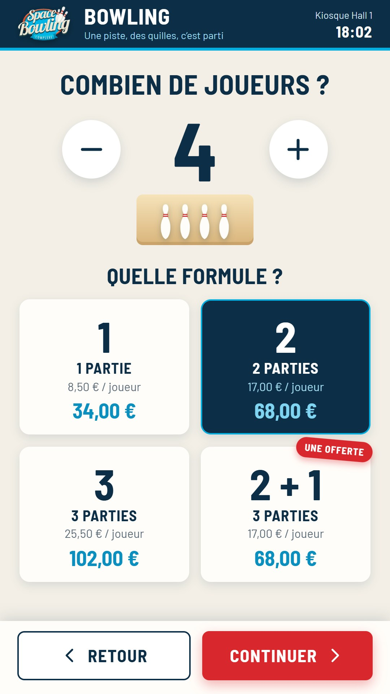
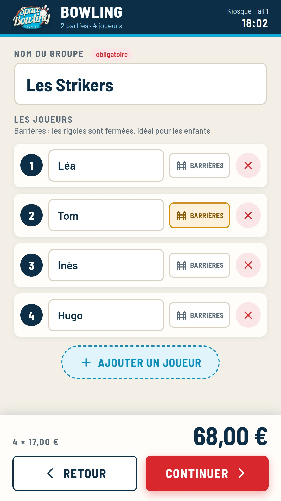
Des séances à heure fixe. Chaque groupe a sa salle pendant toute sa formule ; les autres salles restent réservables.
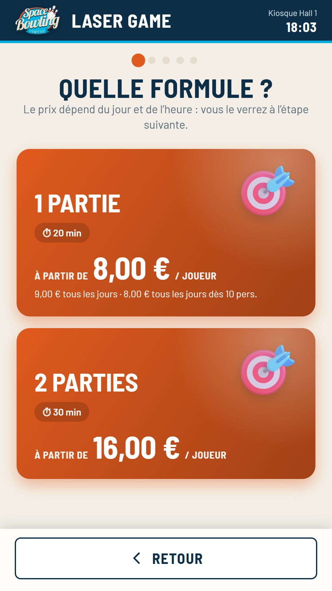
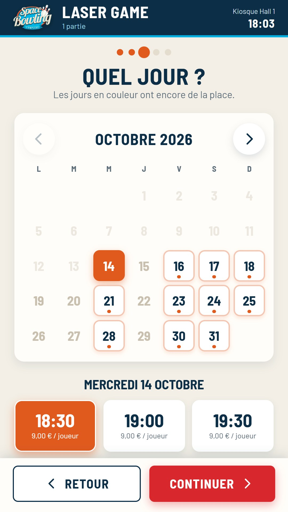
Le groupe loue la salle entière pour une durée. Une réservation ferme la salle pour tout le monde pendant ce temps.
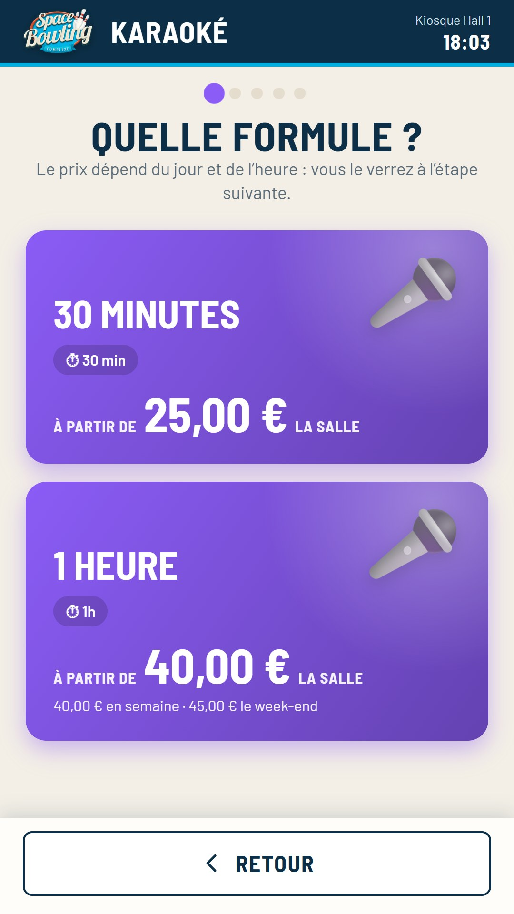
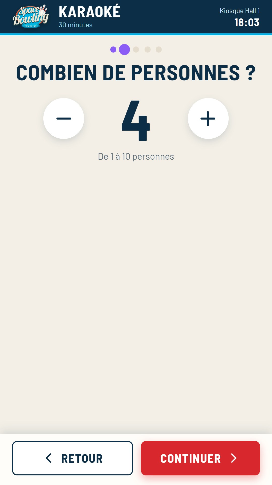
Pas de créneau obligatoire : l’accueil ouvre une table libre à la demande. On peut aussi réserver à l’avance.
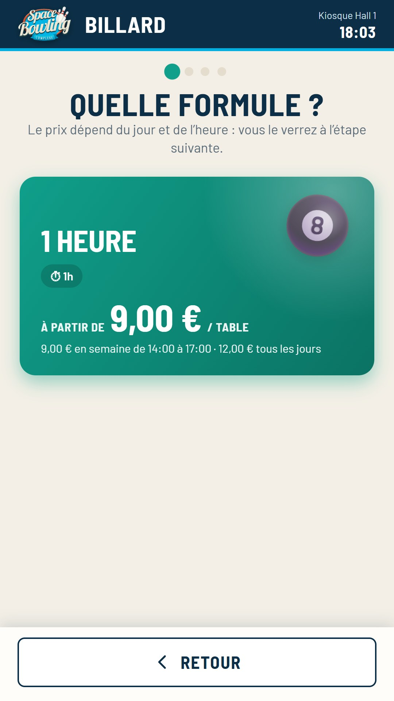
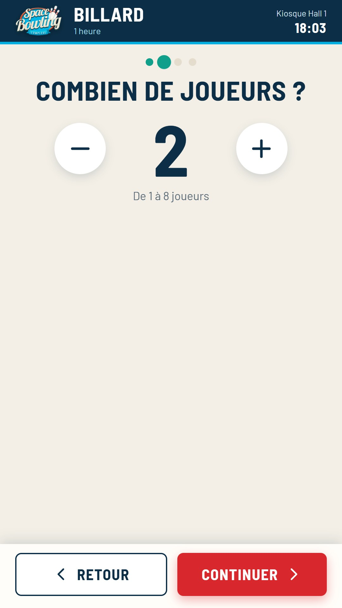
Un forfait qui enchaîne d’autres activités (bowling puis laser, par exemple), avec des options. Il n’a pas de salle à lui.
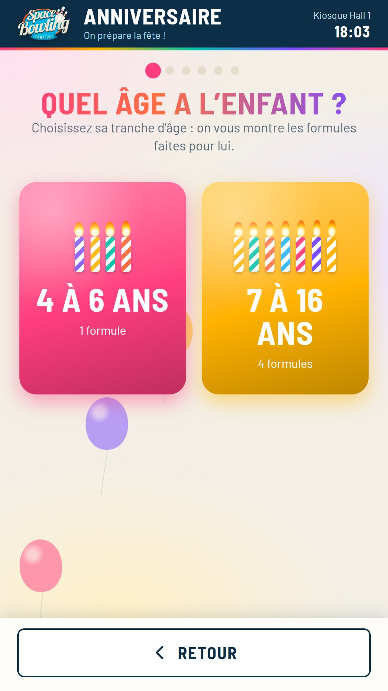
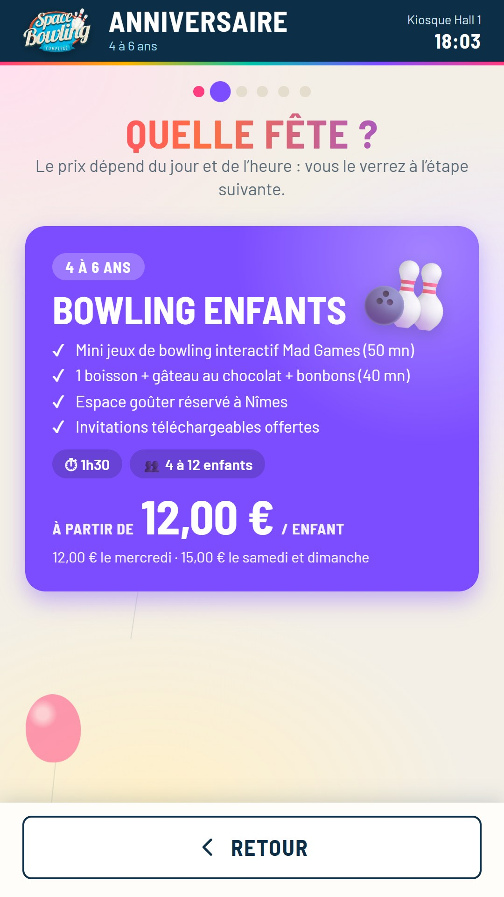
Un fonctionnement à part : on ne peut pas transformer une formule combinée en autre chose, ni l’inverse. Le détail des anniversaires a son propre guide.
Des produits, sans créneau ni ressource. Les commandes partent vers la caisse du bar.
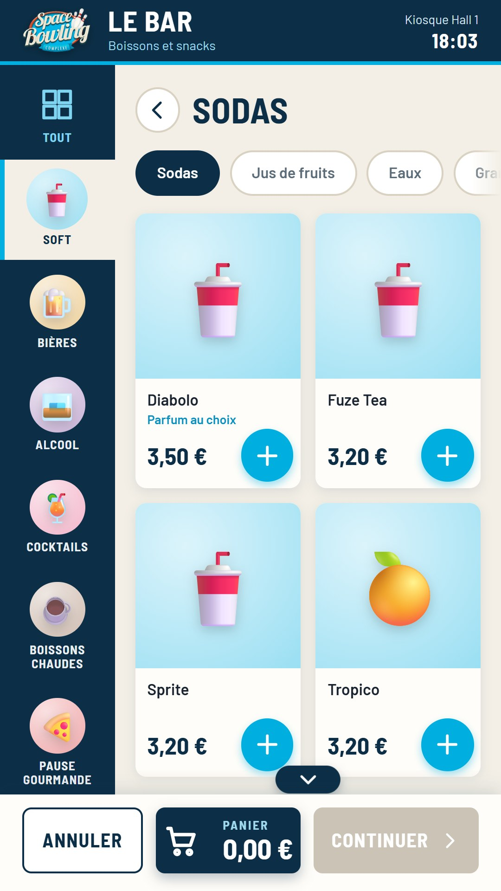
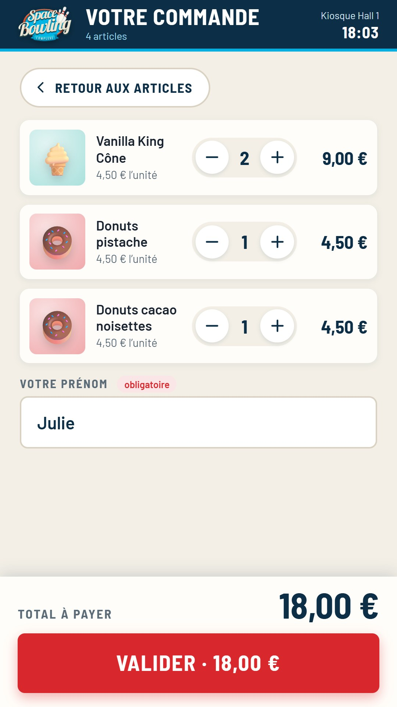
Le bar a son propre guide : la carte, les options, l’import depuis la caisse Trivec, les ventes additionnelles et le suivi des commandes.
Entre les quatre fonctionnements à ressources (partie, séance, durée, accès libre), on peut changer à tout moment, sans rien supprimer. Sandbox › Activités du centre › l’activité › bloc Fonctionnement.
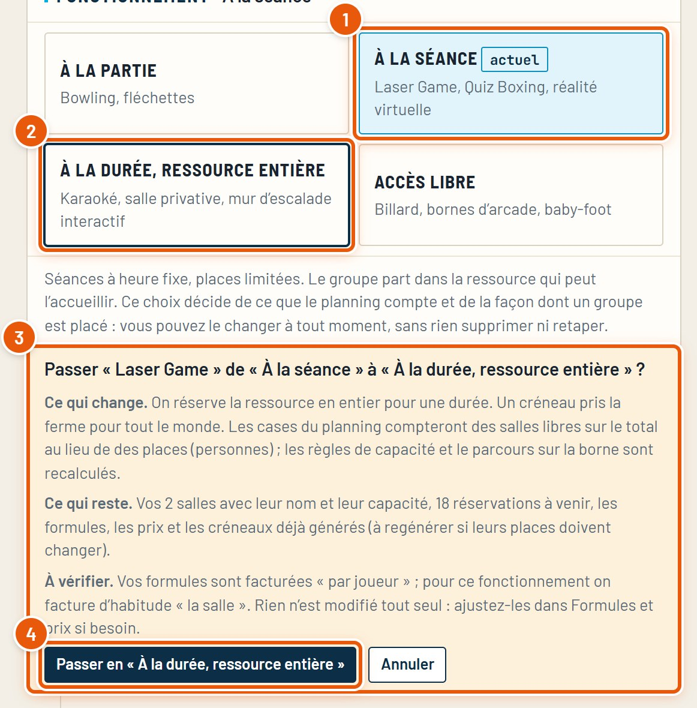
Après un changement, regardez l’unité des formules (onglet Tarifs) : en passant de « séance » à « durée », un prix « par joueur » devient souvent un prix « la salle ». Le CRM le signale, mais ne modifie rien tout seul.
Quatre questions suffisent presque toujours.
| Si vous vous demandez… | Alors |
|---|---|
| « Le client achète-t-il des produits, sans horaire ? » | Vente simple |
| « Est-ce un forfait qui enchaîne plusieurs activités existantes ? » | Formule combinée |
| « Vend-on des parties par joueur, sur des pistes qu’on additionne pour les grands groupes ? » | À la partie |
| « Le groupe loue-t-il une salle entière, avec un prix pour la salle ? » | À la durée, ressource entière |
| « Des séances à heure fixe, un prix par joueur, une salle par groupe ? » | À la séance |
| « Pas besoin de réserver : on ouvre une table libre quand le client arrive ? » | Accès libre |
Hésitation entre séance et durée ? Regardez le prix : « par joueur » → séance, « pour la salle » → durée.
Tous les guides du CRM, refaits à partir du vrai logiciel. Ils se trouvent dans le dossier docs.